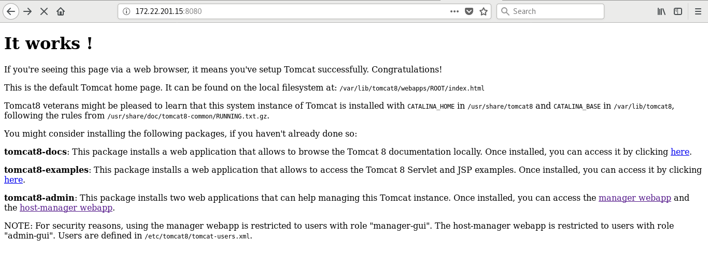
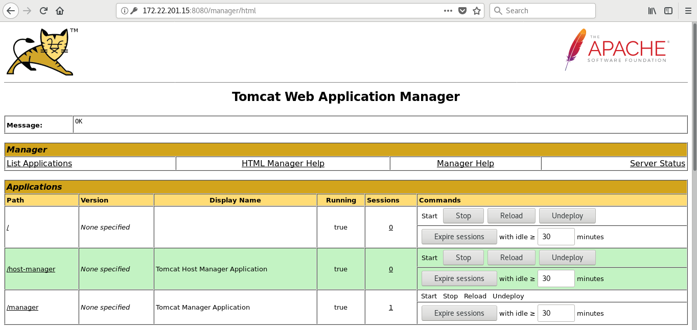
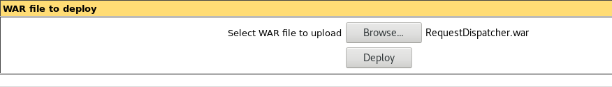
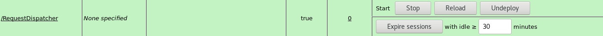

Introducción a Tomcat 9
En el siguiente documento se explicará como implantar un contenedor de servlets Tomcat versión 9 en un sistema Linux Debian.
Instalación
Para instalar tomcat9 desde repositorios:
apt install tomcat9
Por dependencia va a instalar el paquete openjdk-11-jre-headless, que corresponde a una implementación de la JVM mínima para poder ejecutar nuestros programas java.
Desde este momento tendremos Tomcat ejecutándose y sirviendo en el puerto 8080.

Para gestionar el servicio tomcat:
systemctl stop|start|restart|status tomcat9
Opciones del servicio tomcat
Para modificar las opciones del servicio tomcat (que se guardan en la variable JAVA_OPTS) tenemos que indicarlas en el fichero /etc/default/tomcat9. Por defectos las opciones que tenemos configuradas son:
JAVA_OPTS="-Djava.awt.headless=true"
Para implantar algunas aplicaciones que necesitan mucha memoria RAM tenemos que añadir una opción indicando la cantidad de memoria que puede usar el servicio, por ejemplo para indicar 1Gb de memoria sería:
JAVA_OPTS="-Djava.awt.headless=true -Xmx1024m"
Despliegue de aplicaciones mediante la terminal
Implantar una aplicación desde la terminal, tampoco es tan difícil, ya que por defecto cualquier fichero .war que se copie o mueva dentro de l directorio /var/lib/tomcat9/webapps/ se desplegaría automáticamente y dependiendo de nuestra configuración se lanzaría o no.
En mucha documentación sobre tomcat se refiere a la variable de entorno $CATALINA_HOME, en un debian donde hemos instalado tomcat con apt, el valor de esta variable será /var/lib/tomcat9.
Administración
Esta sección la iniciaremos utilizando una herramienta que nos proporciona la fundación Apache y que nos facilita el despliegue de aplicaciones y manejo del servidor, Tomcat-Manager. Para instalarlo:
# apt install tomcat9-admin
Una vez instalado debemos crear un usuario con el rol manager para acceder a él. Añadimos una línea similar a la siguiente al fichero /etc/tomcat9/tomcat-users.xml:
<role rolename="manager-gui"/>
<user username="tomcat" password="s3cret" roles="manager-gui"/>
Para acceder a la zona de administración:

Despliegue de aplicaciones mediante la interfaz web
Utilizaremos la herramienta anterior para explicar cómo desplegar una aplicación, por ejemplo .war. Simplemente bajamos con el scroll hasta encontrar una sección llamada “WAR file to deploy”. Seleccionamos el fichero .war y le damos al botón “Deploy”.
Puedes bajarte el fichero war desde el siguiente enlace.

Automáticamente se creará un nuevo elemento en la sección aplicaciones utilizando el mismo nombre que el fichero .war subido.

Desde aquí podremos controlar la aplicación (Arrancarla, pararla, eliminarla,…)
Administración desde la terminal
Es hora de hablar de los ficheros de configuración.
server.xml
El más importante es /etc/tomcat9/server.xml, cuyo contenido define cómo está formado nuestro servidor. Las secciones más importante de este fichero son:
-
Componente Server: es el elemento principal del archivo
server.xmly todas las demás secciones deben encontrarse entre estos nodos:<Server port="-1" shutdown="SHUTDOWN"> ... </Server> -
Componente Service: Un servicio es un grupo de conectores.
<Service name="Catalina"> ... </Service>name: Nombre utilizado en los ficheros de log, administración y gestión, debe ser distínto para cada service.
-
Subelemento Connector: El elemento
Connectorrepresenta las conexiones (Puertos TCP) que serán abiertas por Tomcat al arranque, se definen diversos atributos los cuales dan más detalles acerca de la conexión.<Connector port="8080" protocol="HTTP/1.1" connectionTimeout="20000" redirectPort="8443" />port: Puerto en el que recibe las peticiones.protocol: ‘HTTP/1.1’ ó ‘AJP/1.3’.redirectPort: Si la petición se hace por medio de SSL, se reenvíara a este puerto.
Como vemos en el fichero el único conector que está descomentado es el conector para HTTP, también podemos encontrar en el fichero el conector para HTTPS:
<!-- <Connector port="8443" protocol="org.apache.coyote.http11.Http11NioProtocol" maxThreads="150" SSLEnabled="true"> <SSLHostConfig> <Certificate certificateKeystoreFile="conf/localhost-rsa.jks" type="RSA" /> </SSLHostConfig> </Connector> -->Y el conector para el protocolo AJP (Apache JServ Protocol), que es un protocolo binario que permite enviar solicitudes desde un servidor web a tomcat que se encuentra detrás del servidor web. Por ejemplo en el servidor web apache2 podemos usar el módulo
proxy_ajppara comunicar apache2 con tomat.<!-- <Connector protocol="AJP/1.3" address="::1" port="8009" redirectPort="8443" /> --> -
Subelemento Engine: Todas las peticiones que lleguen a los puertos y usando los protocolos definidos en los elementos conectores, se procesaran por los elementos definidos aquí:
<Engine name="Catalina" defaultHost="localhost">name: Nombre utilizado para la administración y ficheros de log.defaultHost: Host por defecto que resuelve las peticiones si no se indica otro Host concreto.
Dentro de este elemento podemos encontrar varios elementos
Hostque nos permiten definir virtual hosts para tomcat:<Host name="localhost" appBase="webapps" unpackWARs="true" autoDeploy="true"> ...name: Nombre del host virtual.appBase: Ruta relativa desde<TOMCAT_HOME>donde se despliegan las aplicaciones.unpackWARs: Indica si se deben desempaquetar o no los .war depositados en appBase.autoDeploy: Indica si se desplegarán las aplicaciones automáticamente o no.
context.xml
Fichero de configuración específico de cada aplicación. Si alguna aplicación se despliega sin fichero context.xml, se aplicará la configuración del situado en /etc/tomcat9/context.xml.
<Context>
<WatchedResource>WEB-INF/web.xml</WatchedResource>
<WatchedResource>WEB-INF/tomcat-web.xml</WatchedResource>
<WatchedResource>${catalina.base}/conf/web.xml</WatchedResource>
</Context>
Su utilización es similar a la del fichero .htaccess de Apache.
web.xml
Su ruta real es aplicacion/web-inf/web.xml, se trata de un descriptor de despliegue. Al igual que con el fichero context.xml, Tomcat posee un web.xmlalojado en /etc/tomcat9/web.xml que se ejecuta antes del propio de cada aplicación. Con él se pueden activar y desactivar características como el compilador de JSP.
Ejercicio
Instala apache tomcat en un equipo y despliega la aplicación: EjemploPruebaCarga.war desde la línea de comandos.